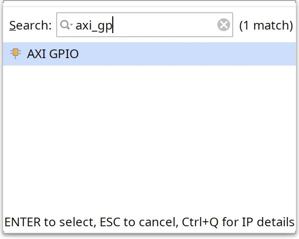
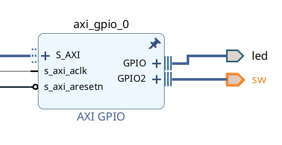
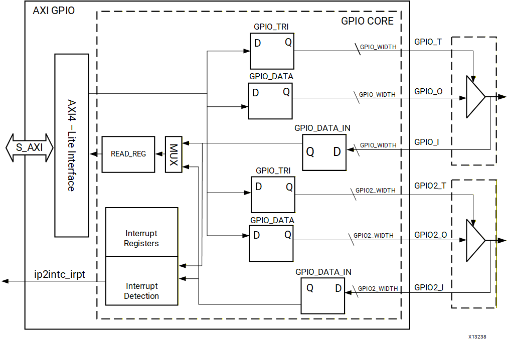
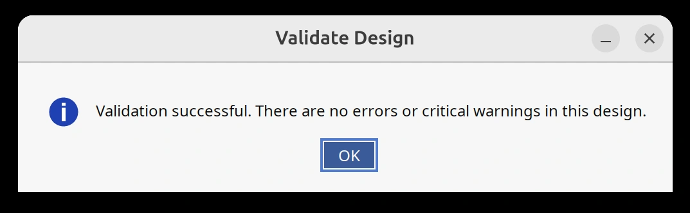
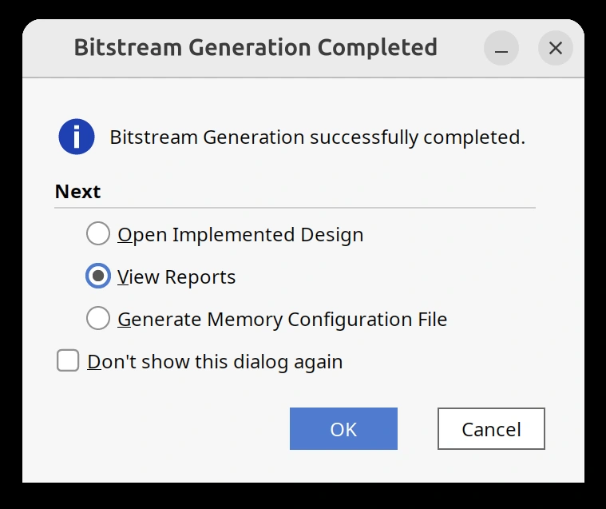
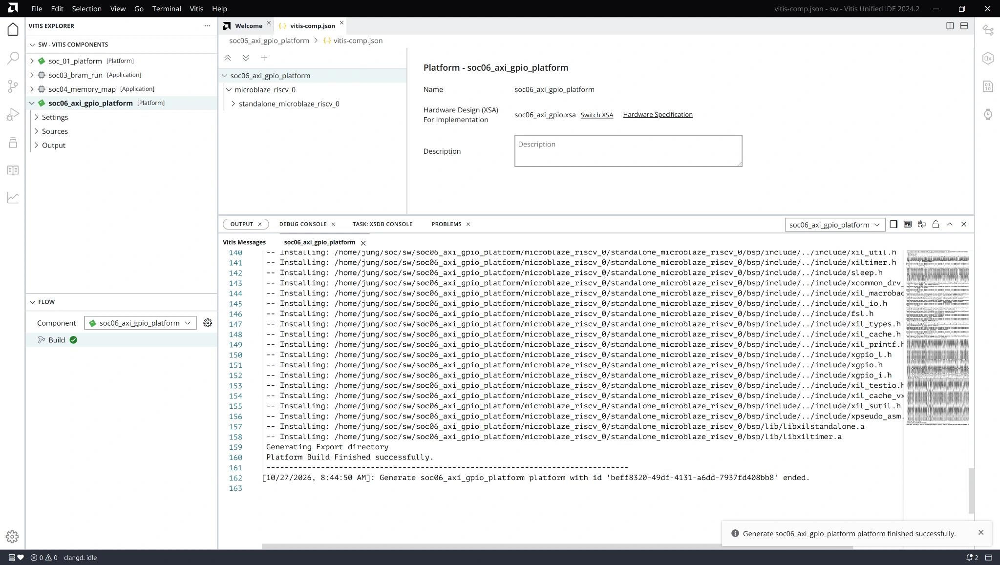
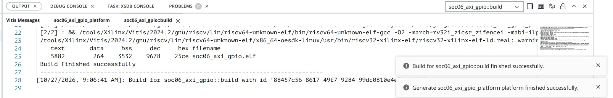

00이 장의 목표
Vivado에서 AXI GPIO를 연결하고 Vitis에서 C 프로그램을 작성하여, Basys3 스위치 16개 상태를 LED 16개에 그대로 표시한다.
- AXI GPIO
- AXI4-Lite
- Dual Channel
- Vivado 2024.2
- Vitis 2024.2
- SW[15:0] → LED[15:0]
01AXI GPIO 실습 목표
Basys3의 스위치 16개를 읽어서 같은 번호의 LED 16개를 켭니다. GPIO(지피아이오, 범용 입출력)는 스위치·LED 같은 간단한 주변장치를 제어하는 기능입니다.
| 입력 조작 | 예상 출력 |
|---|---|
| SW0 ON | LED0 ON |
| SW3 ON | LED3 ON |
| SW0 + SW3 ON | LED0 + LED3 ON |
06장에서는 GPIO를 실제 보드에 연결하고 C 프로그램으로 제어합니다. AXI 신호의 상세 이론은 05장을 참고합니다.
0201장 프로젝트 복제 · Design Sources 정리
06장은 01장에서 만든 MicroBlaze V + BRAM 프로젝트를 복제하여 이어서 만드는 장입니다. 04장은 같은 하드웨어를 이용한 메모리 실습이고, 05장은 AXI 이론이므로 06장 시작을 위해 SoC를 다시 만들지 않습니다. 01장 기존 하드웨어와 기존 Vitis 프로젝트는 보존합니다.
| 구분 | 01장 기존 파일 · 보존 | 06장 새 작업 파일 |
|---|---|---|
| Vivado Project | ~/soc/hw/soc01_microblaze_bram/soc01_microblaze_bram.xpr | ~/soc/hw/soc06_axi_gpio/soc06_axi_gpio.xpr |
| Block Design | soc01_mb_bram.bd | soc06_axi_gpio.bd |
| HDL Wrapper | soc01_mb_bram_wrapper | soc06_axi_gpio_wrapper |
| Top Module | soc01_mb_bram_wrapper | soc06_axi_gpio_wrapper |
| Constraints (XDC) | 기존 Clock / Reset 제약은 유지 | basys3_axi_gpio.xdc를 06장 프로젝트에 독립 보관하고 GPIO 포트를 추가 · SECTION 07 |
| Vitis Workspace | ~/soc/sw | 같은 Workspace 사용 · 별도 soc06_axi_gpio_platform과 soc06_axi_gpio Application 생성 |
- 기존 01장 프로젝트 열기 — Vivado 2024.2에서
~/soc/hw/soc01_microblaze_bram/soc01_microblaze_bram.xpr을 엽니다.microblaze_riscv_0, Local BRAM 16 KiB, MDM, Clocking Wizard, Reset 및ILMB/DLMB를 확인합니다. 이때M_AXI_DP는 주변장치 미연결 상태입니다. - 06장 프로젝트로 복제 — File → Project → Save As를 실행해
soc06_axi_gpio이름으로~/soc/hw/soc06_axi_gpio/에 저장합니다. 원래 01장 프로젝트를 덮어쓰지 않습니다. - Block Design을 06장 이름으로 저장 — 복제본에 남아 있는
soc01_mb_bram을 열고 File → Save Block Design As에서 이름을soc06_axi_gpio로 지정합니다. 실제 사용했던 설정은 Local to Project, Add to Design Sources, Include Comments 선택, Freeze boundary 해제입니다. - 새 HDL Wrapper 생성 — Sources → Design Sources의
soc06_axi_gpio.bd를 우클릭하여 Create HDL Wrapper → Let Vivado manage wrapper and auto-update를 선택합니다. 생성된soc06_axi_gpio_wrapper를 Set as Top으로 지정합니다. - 기존 Wrapper 정리 — 더 이상 Top으로 사용하지 않는
soc01_mb_bram_wrapper는 Remove File from Project만 수행합니다. Delete files from disk는 선택하지 않습니다. 기존 Block Design이나 기존 01장 프로젝트 파일도 삭제하지 않습니다. - Design Sources 및 IP 상태 확인 — 최종 Top이
soc06_axi_gpio_wrapper인지 확인합니다. Tools → Report → Report IP Status에서 기존 IP 9개가 모두 Up-to-date / No changes required였던 정상 화면을 기준으로 확인합니다. - Constraints 분리 — 06장 프로젝트에서 사용할 XDC를 독립 파일로 관리하고 기존 Clock / Reset 설정을 유지합니다. GPIO용 SW/LED 핀과 Wrapper 포트명은 SECTION 06~07에서 확정합니다. 01장 XDC 파일을 직접 편집하지 않습니다.
화면 확인 06장 .xpr, Design Sources의 soc06_axi_gpio.bd, Top soc06_axi_gpio_wrapper, 기존 IP 9개 정상 상태를 확인한 후에만 SECTION 03으로 넘어갑니다. 실제 XDC·BD 소스 경로가 01장 폴더를 직접 가리키면 복사 상태를 먼저 점검합니다.
03AXI GPIO 추가
- Vivado의 IP Integrator → Block Design을 엽니다.
- Add IP에서
AXI GPIO를 검색합니다.
Add IP에서 AXI GPIO 검색 · 크게 보기 AXI GPIO를 추가하여axi_gpio_0가 나타나는지 확인합니다.
화면 확인 axi_gpio_0에 S_AXI, GPIO, GPIO2 인터페이스가 표시됩니다.
하드웨어의 IP 이름 axi_gpio_0는 이후 Vitis의 GPIO 주소 정보와 연결됩니다.
04GPIO 채널 설정
axi_gpio_0를 더블클릭하여 설정 창을 엽니다.- Enable Dual Channel을 활성화합니다.

AXI GPIO 최종 설정: LED 16비트 출력, SW 16비트 입력, 듀얼 채널 · 크게 보기 - 아래 표처럼 두 채널의 방향과 폭을 지정하고 OK를 클릭합니다.
| 설정 | Channel 1 | Channel 2 |
|---|---|---|
| GPIO Width | 16 | 16 |
| GPIO Direction | All Outputs | All Inputs |
| Basys3 연결 | LED 16개 | 스위치 16개 |
Enable Interrupt는 끕니다. 두 채널의 값을 CPU가 반복해서 읽고 쓰는 가장 간단한 방식으로 실습합니다.

05AXI · Clock · Reset 연결
axi_gpio_0/S_AXI에서 Run Connection Automation을 실행합니다.
Run Connection Automation에서 S_AXI 연결 선택 · 크게 보기 - CPU의
M_AXI_DP와 GPIO의S_AXI사이에axi_smc(AXI SmartConnect)가 생성되는지 확인합니다.
자동 연결 완료: AXI SmartConnect와 AXI GPIO · 크게 보기 s_axi_aclk는 시스템 100 MHz 클록,s_axi_aresetn은 활성 Low 리셋 경로에 연결되는지 확인합니다.
화면 확인 Vivado Validate Design에서 AXI, Clock, Reset 연결 오류가 없어야 합니다.
06외부 GPIO 포트와 Wrapper
- AXI GPIO의 Channel 1
GPIO를 외부 포트로 만듭니다. - Channel 2
GPIO2도 외부 포트로 만듭니다. - 외부 인터페이스 이름을 각각
led,sw로 지정합니다.
외부 포트 led, sw 지정 완료 · 크게 보기 - SECTION 02에서 만든
soc06_axi_gpio_wrapper를 Let Vivado manage wrapper and auto-update로 갱신합니다. 새 GPIO 외부 포트가 Top에 반영되지 않았다면 기존soc06_axi_gpio.bd에서 Create HDL Wrapper를 다시 실행하여 갱신하고soc06_axi_gpio_wrapper가 Top인지 확인합니다.
Create HDL Wrapper 자동 관리 옵션 · 크게 보기 ![실제 Vivado/Vitis 2024.2: 최종 Wrapper에 led_tri_o[15:0], sw_tri_i[15:0] 확인](legacy/images/soc06/steps/soc06_013_20261026-162359_vivado.webp)
최종 Wrapper에 led_tri_o[15:0], sw_tri_i[15:0] 확인 · 크게 보기
| Vivado 외부 인터페이스 이름 | HDL Wrapper 실제 포트 이름 | 방향 |
|---|---|---|
led | led_tri_o[15:0] | 출력 |
sw | sw_tri_i[15:0] | 입력 |
중요 XDC의 get_ports에는 led, sw가 아니라 led_tri_o, sw_tri_i를 사용해야 합니다. HDL Wrapper 코드를 임의로 수정하지 않습니다.
Wrapper에 변경된 포트가 보이지 않을 때
get_files -all *soc06_axi_gpio.bd
make_wrapper -files [get_files -all *soc06_axi_gpio.bd] -top -force
update_compile_order -fileset sources_1Vivado Tcl Console 에서 Wrapper를 다시 생성합니다.
07Basys3 XDC 작성
Basys3-Master.xdc의 기존 핀 번호를 그대로 사용합니다. 포트 이름만 실제 Wrapper에 맞춥니다.
| 대상 | 예시 핀 | XDC 포트명 |
|---|---|---|
| SW0 | V17 | sw_tri_i[0] |
| LED0 | U16 | led_tri_o[0] |
| CLK | W5 | clk |
| btnC | U18 | btnC |
- 기존 XDC의 Clock과 Reset 핀 설정은 유지합니다. Clock Wizard가 만드는 클록 제약과 중복되는
create_clock명령 때문에[Constraints 18-1056]경고가 발생할 수 있습니다. 06장에서는 하드웨어 설정을 임의로 변경하지 않습니다. - Switch 16개, LED 16개를 아래처럼 연결합니다.
- Report I/O에서 포트와 PACKAGE_PIN의 대응을 확인합니다.
## Basys3 Slide Switches
set_property -dict { PACKAGE_PIN V17 IOSTANDARD LVCMOS33 } [get_ports {sw_tri_i[0]}]
set_property -dict { PACKAGE_PIN V16 IOSTANDARD LVCMOS33 } [get_ports {sw_tri_i[1]}]
set_property -dict { PACKAGE_PIN W16 IOSTANDARD LVCMOS33 } [get_ports {sw_tri_i[2]}]
set_property -dict { PACKAGE_PIN W17 IOSTANDARD LVCMOS33 } [get_ports {sw_tri_i[3]}]
set_property -dict { PACKAGE_PIN W15 IOSTANDARD LVCMOS33 } [get_ports {sw_tri_i[4]}]
set_property -dict { PACKAGE_PIN V15 IOSTANDARD LVCMOS33 } [get_ports {sw_tri_i[5]}]
set_property -dict { PACKAGE_PIN W14 IOSTANDARD LVCMOS33 } [get_ports {sw_tri_i[6]}]
set_property -dict { PACKAGE_PIN W13 IOSTANDARD LVCMOS33 } [get_ports {sw_tri_i[7]}]
set_property -dict { PACKAGE_PIN V2 IOSTANDARD LVCMOS33 } [get_ports {sw_tri_i[8]}]
set_property -dict { PACKAGE_PIN T3 IOSTANDARD LVCMOS33 } [get_ports {sw_tri_i[9]}]
set_property -dict { PACKAGE_PIN T2 IOSTANDARD LVCMOS33 } [get_ports {sw_tri_i[10]}]
set_property -dict { PACKAGE_PIN R3 IOSTANDARD LVCMOS33 } [get_ports {sw_tri_i[11]}]
set_property -dict { PACKAGE_PIN W2 IOSTANDARD LVCMOS33 } [get_ports {sw_tri_i[12]}]
set_property -dict { PACKAGE_PIN U1 IOSTANDARD LVCMOS33 } [get_ports {sw_tri_i[13]}]
set_property -dict { PACKAGE_PIN T1 IOSTANDARD LVCMOS33 } [get_ports {sw_tri_i[14]}]
set_property -dict { PACKAGE_PIN R2 IOSTANDARD LVCMOS33 } [get_ports {sw_tri_i[15]}]
## Basys3 LEDs
set_property -dict { PACKAGE_PIN U16 IOSTANDARD LVCMOS33 } [get_ports {led_tri_o[0]}]
set_property -dict { PACKAGE_PIN E19 IOSTANDARD LVCMOS33 } [get_ports {led_tri_o[1]}]
set_property -dict { PACKAGE_PIN U19 IOSTANDARD LVCMOS33 } [get_ports {led_tri_o[2]}]
set_property -dict { PACKAGE_PIN V19 IOSTANDARD LVCMOS33 } [get_ports {led_tri_o[3]}]
set_property -dict { PACKAGE_PIN W18 IOSTANDARD LVCMOS33 } [get_ports {led_tri_o[4]}]
set_property -dict { PACKAGE_PIN U15 IOSTANDARD LVCMOS33 } [get_ports {led_tri_o[5]}]
set_property -dict { PACKAGE_PIN U14 IOSTANDARD LVCMOS33 } [get_ports {led_tri_o[6]}]
set_property -dict { PACKAGE_PIN V14 IOSTANDARD LVCMOS33 } [get_ports {led_tri_o[7]}]
set_property -dict { PACKAGE_PIN V13 IOSTANDARD LVCMOS33 } [get_ports {led_tri_o[8]}]
set_property -dict { PACKAGE_PIN V3 IOSTANDARD LVCMOS33 } [get_ports {led_tri_o[9]}]
set_property -dict { PACKAGE_PIN W3 IOSTANDARD LVCMOS33 } [get_ports {led_tri_o[10]}]
set_property -dict { PACKAGE_PIN U3 IOSTANDARD LVCMOS33 } [get_ports {led_tri_o[11]}]
set_property -dict { PACKAGE_PIN P3 IOSTANDARD LVCMOS33 } [get_ports {led_tri_o[12]}]
set_property -dict { PACKAGE_PIN N3 IOSTANDARD LVCMOS33 } [get_ports {led_tri_o[13]}]
set_property -dict { PACKAGE_PIN P1 IOSTANDARD LVCMOS33 } [get_ports {led_tri_o[14]}]
set_property -dict { PACKAGE_PIN L1 IOSTANDARD LVCMOS33 } [get_ports {led_tri_o[15]}]Clock 제약은 기존 프로젝트에서 확인한 설정을 유지합니다. 발생했던 Clock 관련 Critical Warning은 AXI GPIO 포트명 오류와 구별하여 판단합니다.
08Address Editor와 GPIO 레지스터
- Block Design의 Address Editor를 엽니다.
axi_gpio_0/S_AXI의 기준 주소가0x40000000인지 확인합니다.
실제 촬영은 비트스트림 생성 이후 주소를 재확인한 화면입니다. Address Editor에서 AXI GPIO 주소 0x40000000 확인 · 크게 보기 - 아래 네 레지스터는 기준 주소에 오프셋을 더해 접근한다는 점을 확인합니다.
| 레지스터 | 오프셋 | 이 장에서 하는 일 |
|---|---|---|
GPIO_DATA | +0x00 | LED 출력값 |
GPIO_TRI | +0x04 | LED 방향 |
GPIO2_DATA | +0x08 | 스위치 입력값 |
GPIO2_TRI | +0x0C | 스위치 방향 |
실제 주소 범위: 0x40000000 ~ 0x4000FFFF(64 KiB 할당 영역). Local BRAM은 0x00000000 ~ 0x00003FFF(16 KiB)입니다. 64 KiB는 주변장치에 할당한 주소 범위이지 GPIO 데이터의 크기가 아닙니다.

09Validate · Bitstream 생성
- Block Design에서 Validate Design을 실행합니다.

Validate Design 성공 · 크게 보기 - Generate Bitstream을 실행합니다.

Bitstream Generation 성공 · 크게 보기 - 완료 메시지에서
Bitstream Generation successfully completed를 확인합니다.
| 확인 대상 | 정상 기준 |
|---|---|
| Validate Design | Validation successful |
| Bitstream | Bitstream Generation successfully completed |
| 포트 제약 | UCIO-1 또는 NSTD-1 없이 최상위 포트가 제약됨 |
이 실습에서는 초기에 sw/led 이름으로 인해 발생한 XDC 오류를 실제 Wrapper 이름으로 수정해 Bitstream 생성을 완료했습니다.
10Bitstream 포함 XSA 내보내기
- Vivado에서 File → Export → Export Hardware를 선택합니다.
- Include Bitstream을 선택합니다.

Export Hardware에서 Include bitstream 선택 · 크게 보기 - 다음 경로에 XSA를 저장합니다.
~/soc/hw/soc06_axi_gpio/soc06_axi_gpio.xsa화면 확인 하드웨어 산출물 .xsa가 만들어지면 Vitis에서 같은 파일을 선택합니다.
11Vitis Platform 생성
- Vitis Unified IDE 2024.2에서 기존 Workspace
~/soc/sw를 엽니다. - File → New Component → Platform을 선택합니다.
- Platform 이름
soc06_axi_gpio_platform을 입력합니다. - Hardware 파일로 06장에서 내보낸
soc06_axi_gpio.xsa를 선택합니다.
Hardware에 soc06_axi_gpio.xsa 선택 · 크게 보기 - Processor는
microblaze_riscv_0, OS는standalone으로 선택합니다. - 생성 후 Vitis Explorer에서
soc06_axi_gpio_platform[Platform]을 선택하고, 왼쪽 아래 FLOW → Build를 실행합니다. Build 완료 메시지를 확인한 후 Application으로 진행합니다.
Platform Build Finished successfully 확인 · 크게 보기
| 설정 항목 | 입력값 |
|---|---|
| Platform | soc06_axi_gpio_platform |
| Processor | microblaze_riscv_0 |
| Domain | standalone_microblaze_riscv_0 |
| Build 결과 | Platform Build Finished successfully |
기존 자료와 다른 점 06장은 soc_01_platform을 덮어쓰지 않고 신규 Platform을 만들었습니다.
12Vitis Application 생성
- File → New Component → Application을 선택합니다.
- Name에
soc06_axi_gpio, Workspace에~/soc/sw를 입력합니다. - Platform에서
soc06_axi_gpio_platform을 선택합니다. - Domain에서
standalone_microblaze_riscv_0를 선택합니다.
Domain standalone_microblaze_riscv_0 선택 · 크게 보기 - Source Files 추가는 건너뛰고 Finish를 클릭합니다.
- Sources → src에
main.c파일을 만듭니다.
화면 확인 Vitis Explorer에 soc06_axi_gpio [Application]과 soc06_axi_gpio_platform [Platform]이 각각 보여야 합니다.
13main.c 작성 — 자동 제공 파일과 직접 작성 코드
Vitis의 Sources → src → main.c에 아래 코드를 입력합니다. 아래는 동작을 이해하기 위한 간결 코드입니다. 저장소의 실습 소스 main.c는 Classic/SDT 초기화 분기와 Watch용 상태 변수를 포함한 별도 구현입니다. 두 소스를 섞어 붙여넣지 않고 하나를 선택하여 사용합니다.
#include "xparameters.h" // Vitis 자동 생성: GPIO 주소 정보
#include "xgpio.h" // Vitis 자동 제공: AXI GPIO 제어 함수
#include "xstatus.h" // Vitis 자동 제공: 성공·실패 값
#define LED_CH 1 // 직접 지정: Channel 1, LED 출력
#define SW_CH 2 // 직접 지정: Channel 2, Switch 입력
XGpio Gpio; // 직접 선언: GPIO를 제어할 변수
int main(void)
{
// 1. AXI GPIO 초기화
if (XGpio_Initialize(&Gpio, XPAR_XGPIO_0_BASEADDR)
!= XST_SUCCESS)
return XST_FAILURE;
// 2. 입출력 방향 지정 (0: 출력, 1: 입력)
XGpio_SetDataDirection(&Gpio, LED_CH, 0x0000);
XGpio_SetDataDirection(&Gpio, SW_CH, 0xFFFF);
// 3. Switch 값을 읽어서 LED에 계속 출력
while (1) {
u32 sw = XGpio_DiscreteRead(&Gpio, SW_CH);
XGpio_DiscreteWrite(&Gpio, LED_CH, sw);
}
return 0;
}| 코드에 나온 이름 | 누가 준비하나요? | 무엇인가요? |
|---|---|---|
xparameters.h | Vitis 자동 생성 | 하드웨어 주소 정의 |
xgpio.h | Vitis 자동 제공 | GPIO 드라이버 함수 |
xstatus.h | Vitis 자동 제공 | 성공·실패 상태값 |
XPAR_XGPIO_0_BASEADDR | Vitis 자동 생성 | 현재 GPIO의 기준 주소 |
LED_CH, SW_CH | 직접 지정 | LED 채널 1, Switch 채널 2 |
Gpio, sw | 직접 선언 | 제어 대상과 읽은 스위치 값 |
함수 맨 끝의 return 0;은 정상 종료값을 반환한다는 뜻입니다. 다만 현재는 while (1)을 계속 실행하므로 보통 이 줄에 도달하지 않습니다.
입력할 파일은 main.c 하나입니다. BSP 헤더를 복사하거나 직접 만들지 않습니다. xil_types.h의 u32는 드라이버가 포함한 자료형 정의를 통해 사용합니다.
14C 코드 한 줄씩 이해
처음 사용하는 GPIO 드라이버 프로그램입니다. 자동 제공되는 함수·상수와 직접 정한 변수명을 구분하면서 위에서 아래로 한 줄씩 읽습니다.
① GPIO 주소와 함수 가져오기
#include "xparameters.h"
#include "xgpio.h"
#include "xstatus.h"| 코드 | 쉽게 읽기 |
|---|---|
#include | 필요한 정의가 들어 있는 헤더를 사용하겠다는 뜻 |
xparameters.h | Vivado에서 만든 GPIO의 주소를 알려 줌 |
xgpio.h | GPIO를 초기화·읽기·쓰기 할 함수들을 제공 |
xstatus.h | 성공인지 실패인지 확인할 값 제공 |
② 내가 사용할 채널과 변수 지정
#define LED_CH 1
#define SW_CH 2
XGpio Gpio;| 코드 | 쉽게 읽기 |
|---|---|
#define LED_CH 1 | LED는 GPIO 채널 1에 연결 |
#define SW_CH 2 | 스위치는 GPIO 채널 2에 연결 |
XGpio | AMD가 제공하는 GPIO 관리 자료형 |
Gpio | 내가 만든 GPIO 관리 변수의 이름 |
③ GPIO 초기화
if (XGpio_Initialize(&Gpio, XPAR_XGPIO_0_BASEADDR)
!= XST_SUCCESS)
return XST_FAILURE;| 이름 | 쉽게 읽기 |
|---|---|
XGpio_Initialize() | GPIO 장치를 사용할 준비를 함 |
&Gpio | 초기화할 GPIO 변수의 위치(주소)를 전달 |
XPAR_XGPIO_0_BASEADDR | Vitis가 알려준 실제 GPIO 기준 주소를 전달 |
!= XST_SUCCESS | 초기화에 실패했는지 검사 |
return XST_FAILURE; | 실패하면 프로그램을 종료 |
if는 괄호 안 조건을 검사합니다. !=는 두 값이 서로 다르다는 뜻입니다. 초기화 결과가 XST_SUCCESS와 다르면 return을 실행하여 여기서 끝냅니다.
Vitis 화면의 회색 InstancePtr:, EffectiveAddr:는 Inlay Hints(인레이 힌트, 인자 이름 보조 설명)입니다. 설명만 표시되며 직접 타이핑하지 않습니다.
④ LED는 출력, 스위치는 입력
XGpio_SetDataDirection(&Gpio, LED_CH, 0x0000);
XGpio_SetDataDirection(&Gpio, SW_CH, 0xFFFF);| 인자 | 의미 |
|---|---|
&Gpio | 설정할 GPIO 장치 |
LED_CH, SW_CH | 설정할 채널 1 또는 2 |
0x0000 | 16비트 모두 0 → LED 출력 |
0xFFFF | 16비트 모두 1 → 스위치 입력 |
0000 0000 0000 0000입력(SW)1111 1111 1111 1111Vitis에 표시되는 Channel:, DirectionMask:도 각각 채널 번호와 입력·출력 설정값을 가리킵니다.
⑤ 스위치를 읽어서 LED에 출력
while (1) {
u32 sw = XGpio_DiscreteRead(&Gpio, SW_CH);
XGpio_DiscreteWrite(&Gpio, LED_CH, sw);
}| 코드 | 쉽게 읽기 |
|---|---|
while (1) | 멈추지 않고 계속 반복 |
u32 | 32비트 부호 없는 정수형 |
sw | 읽은 스위치 상태를 보관할 변수 |
XGpio_DiscreteRead(&Gpio, SW_CH) | 채널 2의 입력값을 읽음 |
XGpio_DiscreteWrite(&Gpio, LED_CH, sw) | 읽은 값을 채널 1의 LED에 출력 |
sw = 0x0005 → LED0 · LED2 ONreturn 0;은 main()이 종료될 때 반환하는 값입니다. 현재 프로그램은 무한 반복하므로 정상 실행 중에는 도달하지 않습니다.
15Build → clangd 헤더 갱신 → Debug · Inlay Hints
새 Platform을 만든 직후 또는 main.c에 헤더 파일의 빨간 밑줄이 보이면 Platform → Application 순서로 Build하고, 코드 분석기만 갱신합니다. Ubuntu나 Vitis를 재부팅하지 않습니다.
- Platform Build 확인 — Vitis Explorer에서
soc06_axi_gpio_platform[Platform]을 선택합니다. 왼쪽 아래 FLOW → Build를 실행하고 오류 없이 끝났는지 확인합니다. 앞 절에서 이미 정상 빌드했다면 중복 실행할 필요는 없습니다. - Application Build — 왼쪽 아래 FLOW → Component에서
soc06_axi_gpio[Application]을 선택하고 Build를 클릭합니다.Build Finished successfully와 ELF 생성을 확인합니다.
Build 성공 로그 부분을 잘라낸 화면입니다. Application Build 성공 로그 발췌(기존 편집기 표시 오류와 별개) · 크게 보기 - 헤더 인식 갱신 —
main.c에 빨간 밑줄이 남아 있으면 Ctrl + Shift + P →clangd: Restart language server검색 → 해당 명령을 실행합니다.clangd(클랭디, C/C++ 코드 분석 서버)만 다시 시작하며 Vitis 프로젝트와 실행 중인 컴퓨터는 그대로 유지합니다. - 빨간 밑줄 재확인 — 잠시 후
xparameters.h,xgpio.h,xstatus.h에 표시됐던 코드 분석 오류가 사라졌는지 확인합니다. Application Build 자체가 실패했다면 빨간 밑줄만 지우려 하지 말고 Build 출력의 실제 컴파일 오류부터 해결합니다. - Settings → launch.json을 열고
soc06_axi_gpio.bit,soc06_axi_gpio.elf,microblaze_riscv_0를 확인합니다. - Debug로 진입합니다.
Hart #0 — PAUSED ON BREAKPOINT가 표시되면main()에서 멈춘 상태입니다.
확인된 Debug 중단점 진입 화면입니다. LED 실물 출력 사진은 아닙니다. Debug: RISC-V Hart #0, main() 중단점 진입 · 크게 보기 - Continue (▶)를 눌러 프로그램을 계속 실행합니다.
| 파일 / 화면 | 확인 내용 |
|---|---|
soc06_axi_gpio.elf | Application Build 후 자동 생성된 실행 파일 |
launch.json | Bitstream/ELF 다운로드 및 Debug 설정 |
main.c의 회색 InstancePtr: | Vitis 편집기의 인자 이름 보조 표시 |
Inlay Hints 표시 설정
Vitis 상단의 File → Preferences → Open Settings (UI)에서 Inlay Hints를 검색하고 Editor › Inlay Hints: Enabled → On으로 설정합니다. 직접 입력하는 소스 코드에는 포함되지 않습니다.
Build는 성공했는데 코드에 빨간 밑줄이 남을 때
- 먼저
soc06_axi_gpio_platform[Platform]의 Build 성공 여부를 확인합니다. soc06_axi_gpio[Application]의 Build 성공 여부를 확인합니다.- Ctrl + Shift + P →
clangd: Restart language server를 실행하고main.c를 다시 확인합니다.
판정 기준: 실제 컴파일·링크가 성공했는데 편집기에만 빨간 밑줄이 남으면 코드 분석기 경로 갱신 문제일 수 있습니다. 반대로 컴파일러가 fatal error: xparameters.h: No such file or directory처럼 출력한다면 Platform/Domain/BSP 연결을 먼저 확인해야 합니다. #include에 컴퓨터의 절대 경로를 직접 넣거나 헤더를 수동 복사하지 않습니다.
기존 확인 사례: 06장에서는 Vitis 재실행 후 오류 표시가 사라진 사례가 있었습니다. 이제는 재실행 전에 clangd만 다시 시작하는 방법을 우선 적용합니다. 해당 방법의 성공 여부는 실행 화면에서 확인합니다.
16Basys3 동작 확인 · 오류 점검
프로그램 실행 후 스위치를 움직이면 같은 번호의 LED가 반응해야 합니다.
| 보드 조작 | 예상 LED 출력 |
|---|---|
| 모두 OFF | 모든 LED 꺼짐 |
| SW0 ON | LED0 켜짐 |
| SW1 ON | LED1 켜짐 |
| SW0 + SW3 ON | LED0 + LED3 켜짐 |
| SW15 ON | LED15 켜짐 |
| 모두 ON | LED 16개 모두 켜짐 |
동작하지 않을 때 확인
| 증상 | 먼저 확인할 곳 |
|---|---|
| LED가 반응하지 않음 | Debug가 중단점에 멈추지 않았는지 확인하고 Continue 실행 |
| SW와 LED 번호가 다름 | sw_tri_i[n], led_tri_o[n] XDC 핀 매핑 |
| GPIO를 초기화하지 못함 | Platform XSA와 XPAR_XGPIO_0_BASEADDR |
| Bitstream 생성 오류 | Wrapper 포트명과 XDC get_ports 일치 여부 |
| Vitis 헤더에 빨간 밑줄만 표시 | Platform Build → Application Build 성공 확인 → Ctrl + Shift + P에서 clangd: Restart language server 실행 |
실습 확인 기준: 16개 스위치가 같은 번호의 LED에 대응하는지 보드에서 확인합니다.
17참고 문서
| 문서 | 확인 항목 |
|---|---|
| AMD PG144 · AXI GPIO v2.0 | AXI GPIO 전체 구조와 공식 Register 정의 |
| AMD PG144 · Functional Description | AXI4-Lite, Single/Dual Channel, GPIO Block Diagram |
| AMD PG144 · Register Space | GPIO_DATA 0x00, GPIO_TRI 0x04, GPIO2_DATA 0x08, GPIO2_TRI 0x0C |
| AMD PG144 · Programming Sequence | Input/Output Direction과 Data Read/Write 순서 |
| AMD/Xilinx GPIO Driver API | XGpio_Initialize, DiscreteRead, DiscreteWrite |
| AMD embeddedsw · xgpio_example.c | 공식 XGpio 초기화와 LED Output 예제 구조 |
| Digilent Basys 3 Reference Manual | Figure 16 · 16 Switch / 16 LED 연결과 LED Active-High 구조 |
| Digilent Basys-3-Master.xdc | SW0~SW15, LED0~LED15 FPGA Pin |